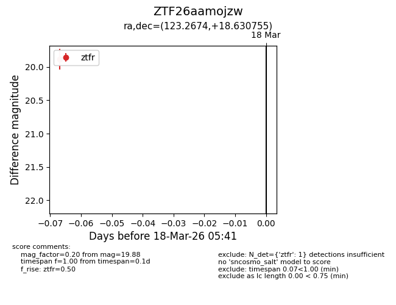
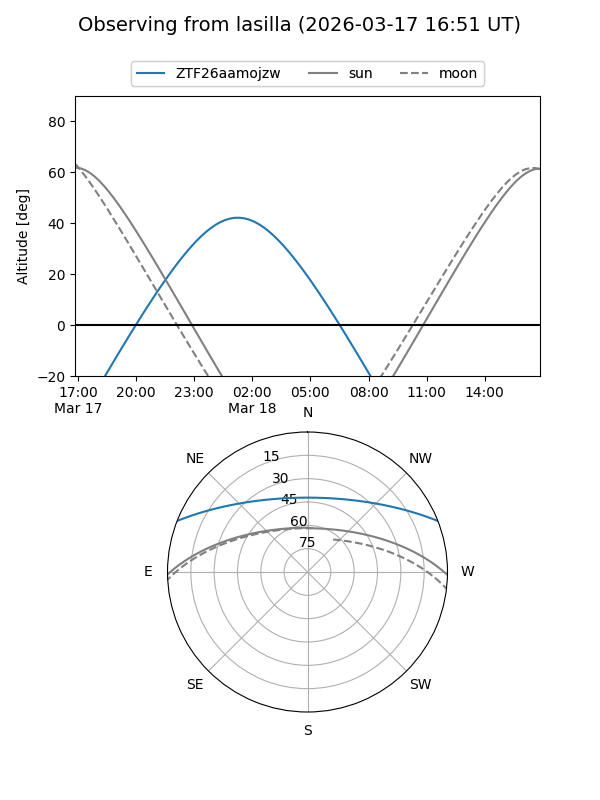
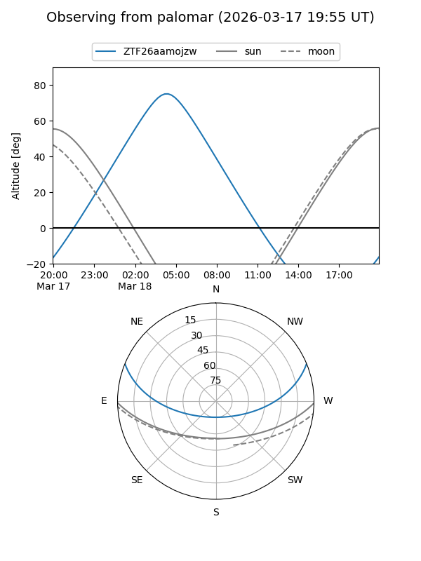

ZTF26aamojzw
Target ZTF26aamojzw at 2026-03-18 05:43
Aliases and brokers:
FINK: link
Lasair: link
ALeRCE: link
alt names
ZTF26aamojzw (ztf,fink_ztf)
Coordinates:
equatorial (ra, dec) = 123.2674,+18.63076
equatorial (HMS+DMS) = 08:13:04.17,+18:37:50.72
galactic (l, b) = (204.3737,+26.08789)
Flags:
Photometry:
last ztfr=19.88
1 ztfr detections
Lightcurve

Visibility


Additional plots